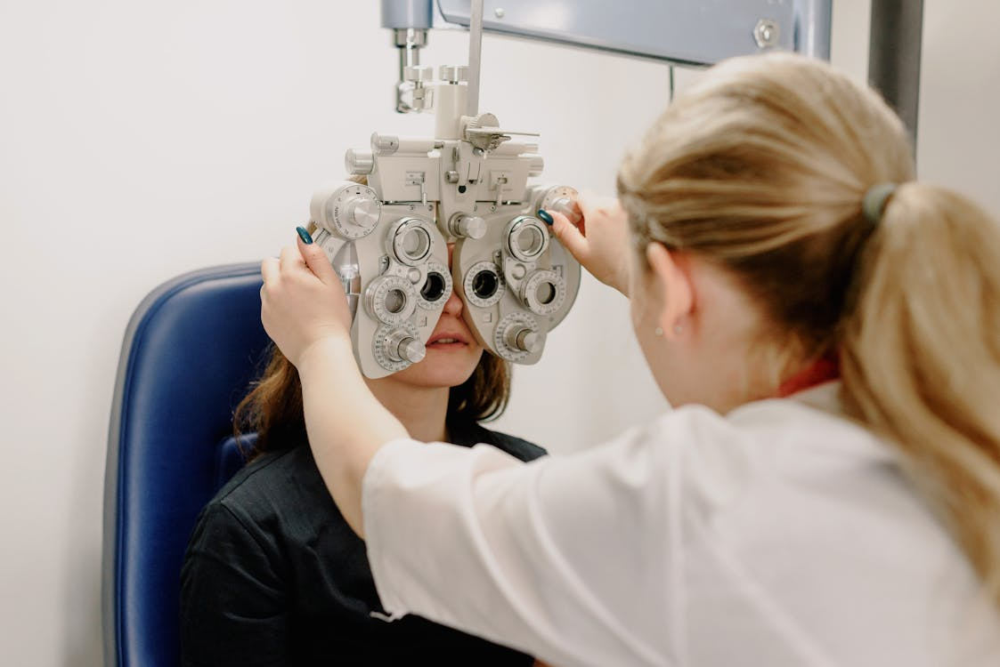
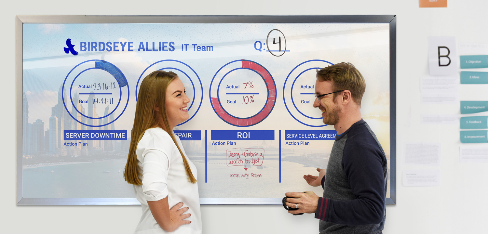
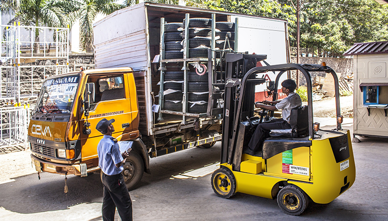
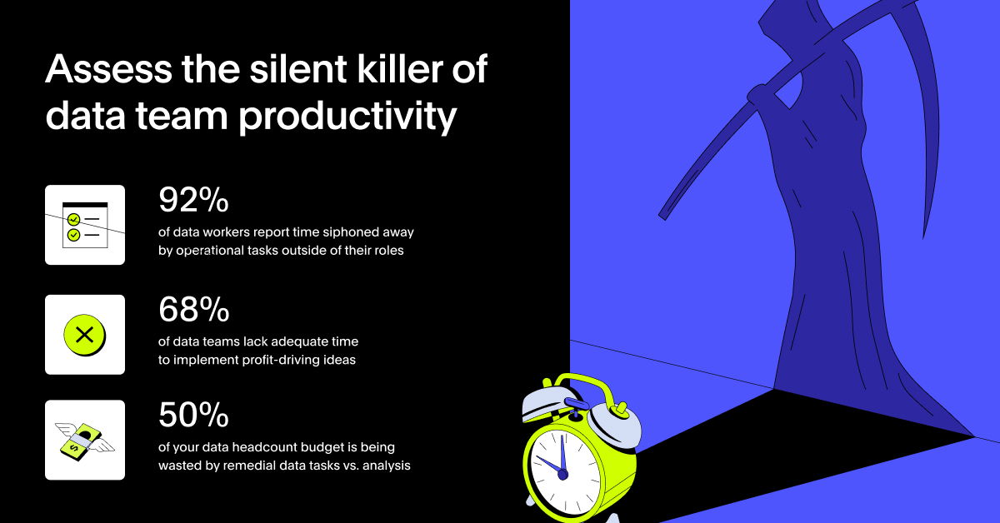

Insights & Point of View
What we think.
What we've seen.
Not trend reports. Frameworks and observations built from 200+ client engagements across India, GCC, Southeast Asia, and Europe.
18 articles
7 sectors
80% primary-research-led
Industry
All
Technology & SaaS
Healthcare & Life Sciences
CPG / FMCG / Retail
Energy & Chemicals
Manufacturing & Industrials
Education / EdTech
Cross-sector
Technology · SaaS
Technology / SaaS
Global SaaS Expansion Fails Quietly Long Before Revenue Slows Down
May 2026
8 min read
Read insight
CPG / FMCG / Retail
CPG / FMCG / Retail
Retail Expansion Fails When Growth Moves Faster Than Market Understanding
Apr 2026
7 min read
Read insight
 Energy & Chemicals · GCC
Energy & Chemicals · GCC
Energy & Chemicals
The GCC Renewable Energy Opportunity Is Bigger Than Most Companies Realise. So Is the Execution Risk.
Feb 2026
9 min read
Read insight
Technology · SaaS
Technology / SaaS
Most SaaS Growth Problems Are Not Acquisition Problems. They Are Customer Understanding Problems.
Jan 2026
8 min read
Read insight
Healthcare & Life Sciences
Healthcare & Life Sciences
Healthcare's AI Problem Is Not Technology Adoption. It Is Operational Readiness.
Jan 2026
9 min read
Read insight
Education / EdTech · GCC
Education / EdTech
Most E-Learning Companies Do Not Have a Growth Problem. They Have a Retention Problem.
Dec 2025
7 min read
Read insight

Healthcare · BenchmarkingHealthcare & Life Sciences
Why Defining the Right Benchmark Shapes Better Decisions: Standard of Care (SoC)
Dec 2025
6 min read
Read insight
Healthcare · Pharma · Clinical
Healthcare / Pharma
Pharma's Biggest Data Problem Is Not Data Availability. It Is Decision Intelligence.
Dec 2025
9 min read
Read insight
 Manufacturing & Industrials
Manufacturing & Industrials
Manufacturing & Industrials
Most MSMEs Do Not Have a Capability Problem. They Have an Execution Problem.
Nov 2025
7 min read
Read insight
Technology · Drones · India
Technology / Deep Tech
India's Drone Opportunity Is Growing Faster Than Most Companies Can Operationally Handle
Nov 2025
8 min read
Read insight
Technology · SaaS
Technology / SaaS
Product-Led Growth vs Sales-Led Growth: Which Model Actually Fits Your Stage
Oct 2025
7 min read
Read insight
CPG / FMCG · UAE
CPG / FMCG / Retail
The UAE Consumer Goods Market Is Growing. But Growth Is Becoming Harder to Capture Predictably.
Oct 2025
8 min read
Read insight

Cross-sector · StrategyCross-sector
Most Market Expansion Strategies Fail Before the Company Even Enters the Market
Sep 2025
8 min read
Read insight

Manufacturing · Supply ChainManufacturing & Industrials
Why Supply Chain Resilience Is Now a Board-Level Strategy Problem
Sep 2025
9 min read
Read insight
Cross-sector · Market dynamics
Cross-sector
Winning in Saturated Markets
Sep 2025
7 min read
Read insight
Cross-sector · Strategy
Cross-sector
Business Management Consultants vs In-House Strategy Team: Which Is Right for Your Business
May 2026
8 min read
Read insight
Cross-sector · Operations
Cross-sector
Cost Transformation Beyond Cost Cutting
Apr 2026
7 min read
Read insight

Technology · AITechnology / AI
Turning AI Hype Into Business Results
Apr 2026
8 min read
Read insight
No insights match this filter.
Try a different industry, or browse everything.
200+
Projects delivered
80%
Primary-research-led
4
Countries & offices
9
Years of practice